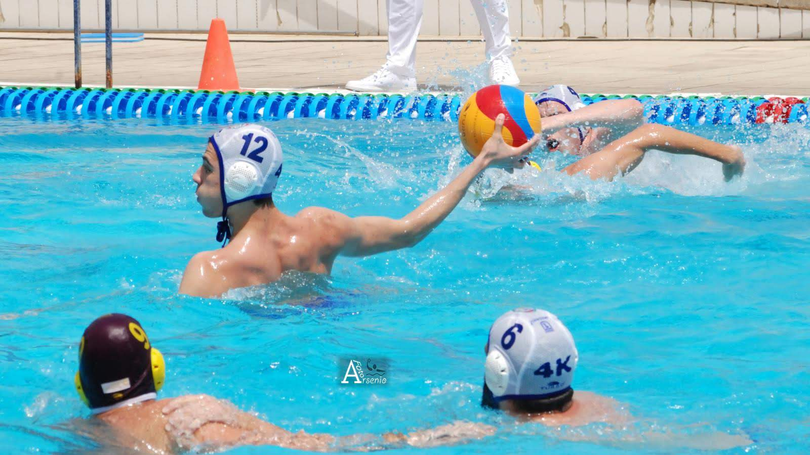
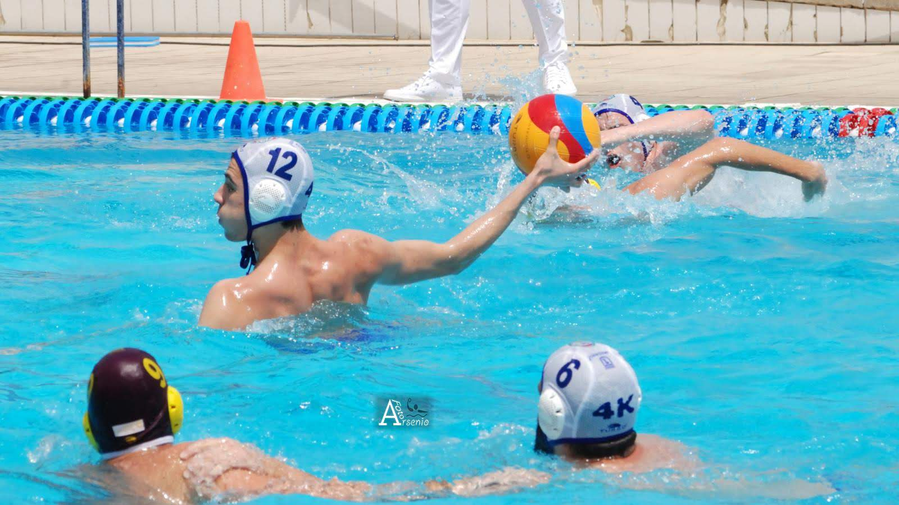

Deporte
 

Fanático de los deportes desde pequeño, practico waterpolo desde hace ya once temporadas, un deporte con el que he crecido y me enseñado muchas cosas.
Entrenamiento diario, disciplina y sacrificio son muchos de los valores que te enseña este deporte. Poco mediático y humilde este deporte, los que lo practicamos lo hacemos por amor al mismo ya que entrenamos de Lunes a Viernes 2 horas y media y luego partidos los Sábados teniendo esto que compaginarlo con estudios, trabajo, etc...
Campeón de España (2ªCat) en 2016, cuatro temporadas en Segunda división nacional.
Si quieres más información acerca de este deporte pincha aquí